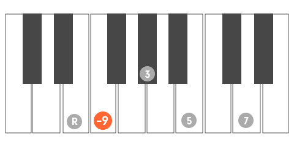
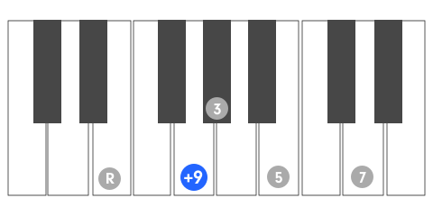
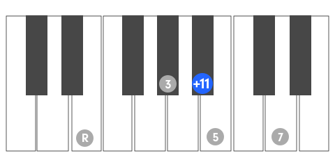
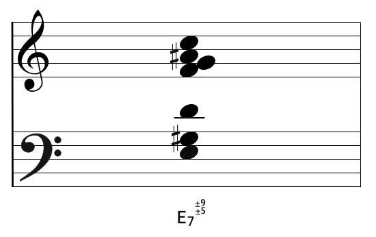

第IV章中讲解了引伸音的记谱法、避免音的逻辑以及引伸音的选择方法。 当时关于引伸音的选择，还仅停留在传授基本理念的层面：
- 对调性而言是否属于自然音（Diatonic）是重要的分水岭。自然音当然更容易使用。
- 在属七和弦上是使用非自然音引伸音（Non-diatonic tension）的绝佳机会。即使叠置在根音或五音上方也没有关系。
- 从核心（Kernel）的角度来看它具体是哪个音也很重要。带有临时记号的音，需要思考它会暗示哪一个调。
本次我们来进一步充实内容，特别是以属于进阶存在的 ±9th、+11th、-13th 这 4 个引伸音为中心展开更深入的讲解。 9th 有 sus2 与九和弦，11th 有 sus4，13th 有六和弦等“类似物”，相信大家对它们已经掌握了诀窍，但除此之外的进阶引伸音想必还有很多未知之处。补充这部分内容，正是本文的目的。
III7 是主角
这一次，在键盘图例中我们将以 III7 为例进行讲解。

如你所见，进阶引伸音中有 3 个对于调性而言是自然音，而此时和弦本身的音乐情绪也正处于剧烈动摇的时刻，因此 III7 是使用进阶引伸音的绝佳时机。 接下来我们将以以下音频为基准，展开对比讲解。
IVΔ7 III7 VIm7 II7
我们依次向这个 III7 和 II7 中加入 4 种引伸音，来确认声音质感的差异。此外，若在这两者之外还有经典的“使用场景”，我们也会一并介绍。
 1. -9th 的用法
1. -9th 的用法
-9th 是小二度、位于根音上方半音的引伸音，会产生极其强烈的浑浊感。

原则上“和弦音上方半音为避免音”，所以在一般理论中常被解释为“只有在属七和弦时才能使用”。实际上在属七和弦之外的使用机会确实非常有限[1]。 当根音为 III 时，F 音即为 -9th，这是自然音阶中的强倾性音，能够获得明显的情绪动摇效果。 另一方面，当根音为 II 时，-9th 是 E♭ 音，这就增添了一丝蓝调音（Blue Note）的风味。果然非自然音的个性极强，驾驭起来会更加困难。
V7 与 -9
-9th 在 V7 上的运用也是大家所熟知的。

根音为 V 时，-9th 即为“A♭”音，本质上融入了与下属小和弦（Subdominant Minor）相同的“哀伤感”。
IIm7 IIIm7 IVΔ7 V V7(-9)
将其放在 B 段常见的和弦进行末尾，用于副歌前的气氛烘托是经典用法。你能感受到那股淡淡的下属小和弦色彩吗？ 由于它比普通的九音低了半音，从相对感觉上来说可以说是一种偏暗的引伸音。此外，在 VI7 上使用也是非常经典的。
2. +9th 的用法
+9th 稍有些复杂，它是与根音构成“增二度”关系的引伸音。

听起来似乎相当自然。这也是情理之中，因为增二度与小三度是等音程（异名同音程）。因此这实质上等同于“变音的还原（取消变位）”。在现代流行乐中，在 III7 上使用 G 音早已经是家常便饭。而在 II7 上的还原较为少见，听起来可能会略显别扭。 在进行“变音还原”，或者在 I7 上像“蓝调音”那样叠置 E♭ 等将小调元素碰撞在大调上（Major 与 Minor 碰撞）的技术时，一般的和弦理论会将其记为 +9th[2]。
♭II 与 +9
遇到非小三度的“真正”的增二度的情况非常有限，如果要举出一个例子，当根音为 ♭II 时，E 音就是 +9th。

IIm7(9) ♭IIΔ7(+9) IΔ7
像这样虽然相隔 [3个半音]，但在唱名音级上属于相邻二度的，才是真正意义上的 +9th 引伸音。 为了让它听起来优美，最好将 E 音置于 F 音之上。这是一种极其梦幻、甚至有人可能会觉得有点怪异的边缘声响，适合高阶使用者。
3. +11th 的用法
+11th 是三全度（Tritone）音程，因此会产生显而易见的强烈浑浊。

在 III7 和 II7 上它都是非自然音，异物感相当强烈。这里我们没有将其放在最高音（Top note），而是置于内声部使其融合。这是一种非常适合用来营造魔幻、疯狂或非同寻常氛围的引伸音。
自然音的 +11th
+11th 成为自然音的情况，除了根音为 IV 之外，在降号系（♭系）根音上基本皆是如此，因此这些和弦正是它的绝佳用武之地。

无论三音是大三度还是小三度，+11th 都不会与三音发生半音重叠，因此在属七和弦之外也有大量叠置的机会。具体来说如 ♭II7、♭IIIΔ7、IVmΔ7、♭VIΔ7、♭VII7 等等。
IVΔ7(+11) IIm7/V ♭VIΔ7(+11,13) ♭IIΔ7(+11,13) IIm9
这是在 3 处使用自然音 +11th 的例子。都带有三所带来的神秘且诡异的色彩。
4. -13th 的用法
最后的 -13th 是小六度音程。在五音为完全五度的和弦（大七和弦或小七和弦）中它被视作避免音，因此它的用武之地主要是属七和弦。

在后半段安静的部分中，小六度郁郁葱葱的小调感得到了充分展现。 在 III7 和 VI7 上，C 和 F 分别作为 -13th，非常易于使用。而在 II7 上则是 B♭，这同样会增添一种蓝调般的扭曲感。
可以看出，4 种进阶引伸音各自具有鲜明的声音个性。虽然这次我们仅展示了只添加 1 个进阶引伸音的情况，但添加多个也是完全可行的。 大致印象上，根据 ♯/♭ 的相对逻辑，-9th/-13th 给人下沉、低回的感觉，而 +9th/+11th 则给人上浮、明亮的感觉；但另一方面，在进阶引伸音中，核心（Kernel）的视角依然至关重要，因此即使是同一个引伸音，构建在什么根音上，其易用性与音响意义也会有所不同。建议先从引伸音属于自然音的模式开始记忆。
5. 进阶引伸音与等音
在进阶引伸音中，+11th 与 -13th 由于位于完全五音（P5th）两侧的位置关系，与**降五音（♭5）/ 升五音（♯5）构成了等音程（异名同音程）**的关系。

在第IV章中我们曾做过“音是错开还是添加是有区别的”这样的说明，但实际上和弦的五度音经常会被省略。毕竟很多时候没有半音碰撞会更好，而且单纯在手指不够用的时候，“无色透明的辅助角色”P5th 绝对是最佳的精简人选。 当五音被省略时，该和弦在外表上便与降五、升五和弦完全无法区分了。

从严谨的理论来说，虽然常有“这里记作 (-13,omit5) 更准确”的情况，但那样写未免过于繁琐冗长，因此在这种情况下，习惯上允许使用任意一种记号。(+11) 与 (-5)、(-13) 与 (+5) 在实质上是相通的，这一点记在脑海的一角会很有帮助。
用正负号更清晰直观
如果将 +11th 与 -13th 替换为升五音/降五音，这 4 个进阶引伸音就可以用“±9, ±5”的形式非常整洁地归纳起来。

也就是说，可以理解为“常规的 9th 和 5th 的两侧各有一个进阶引伸音”，以此来把握引伸音的位置。也正因为这种便于记忆的特性，这种等音的“改写”在日常实践中非常普遍。
6. 变化属和弦（Altered Dominant Chord）
正如我们所见，进阶引伸音主要活跃在属七和弦上。此时，全部 4 个进阶引伸音都会作为候选摆在眼前。因此在即兴演奏中，通过自由交织运用它们，可以创造出丰富多变的声音质感。 但仔细一想，如果要向演奏者传达“这 4 个进阶引伸音你可以随意使用哦”，在和弦谱上应该怎么写呢？如果把 4 个引伸音全都写上去，读起来就变成了要求“全部”使用这 4 个音。


于是爵士理论中准备了一个专门的和弦标记，用“7alt”这种记法来表达这一意图。

在和弦谱上只要写下“7alt”，单凭这一标记就能传达以下细致的信息：
- 可以任意使用 4 种进阶引伸音
- 不使用普通的 9th、11th、13th
- 省略完全五度（P5th）
这正是以即兴演奏为大前提的爵士理论独有的构想。这种和弦类型被称为变化属和弦（Altered Dominant）。 规定省略完全五度，主要是出于实践上的考量。考虑到即兴演奏，让这个可能与 ±5th 发生奇怪冲突的音消失显然更加安全。

变化属和弦的模式
引伸音的运用是“任意”的。如果单纯计算，引伸音的使用组合有 15 种之多，但是……

真正实用的组合其实要更加集中。虽然说是“任意”，但如果一股脑堆叠大量引伸音，彼此浑浊反而会抹杀引伸音的个性。在考虑搭配方式时，上一节讲到的内容将非常有参考价值。像“在这个根音下这个音属于自然音，所以很容易放进去”这样，一步一步建立起记忆。
7. 变化属音阶（Altered Dominant Scale）
如果进一步把焦点放在即兴演奏上，当乐谱上写着“7alt”时，应该弹奏怎样的音阶呢？这种疑问自然会油然而生。在保留“任意添加引伸音”这种自由裁量空间的情况下，重奏或合奏真的能够成立吗？ 对此，有一个解决方案：使用包含全部“±9, ±5”的音阶来进行演奏。

如你所见，在根音、三音、七音（Rt, 3rd, 7th）的基础上加入“±9, ±5”，恰好构成了一个完整的七声音阶并填满了八度。这样就可以流畅地演奏旋律短句了。 这个音阶被称为变化属音阶（Altered Dominant Scale，常简称为变化音阶/Altered Scale）。在实际演奏中，如果只是照本宣科地爬音阶，就会变成进阶引伸音的胡乱狂轰，因此需要用心拿捏乐句构成的分寸。 赋予引伸音选择自由的“变化属和弦”，以及与其对应的“变化属音阶”。可以说，这是爵士乐为了在“即兴演奏中不至于崩溃的前提下，能够自由且便捷地打出特殊音响”而精心打磨的独门利器。
变化引伸音（Altered Tension）
此外在日本，“自然引伸音与变化引伸音（Natural Tension & Altered Tension）”也是常用的分类术语，但这却是一个因人而异、有两种不同定义的不稳定词汇：
- 变化引伸音是指变位的引伸音，即 ♭9, ♯9, ♯11, ♭13。
- 变化引伸音是指变位的引伸音，即乐谱上带有临时升降记号（♯/♭）的引伸音。
核心含义虽然统一为“带升降号的引伸音”，但对于这个 ♯/♭ 是“附在引伸音的度数上”还是“附在乐谱的音符上”，人们的看法产生了分歧。 这两者看似相近，实则完全不同。毕竟和弦名称里的 ♯/♭ 与乐谱上的 ♯/♭ 并没有必然联系。在 V7 或 IΔ7 上无论按哪种定义理解结果都一样，但在某些和弦上分类就会产生矛盾。

……屡见不鲜的词义分歧，令人遗憾地也潜伏在如此高阶的领域中。如果一定要支持其中一方，既然说到“有无临时记号”已经有自然音引伸音（Diatonic Tension）/ 非自然音引伸音（Non-diatonic Tension）这种说法，那么将“变化引伸音”用于度数上的 ♯/♭，在词汇运用上显然更加经济高效。不过在如此高阶的论题中存在词义摇摆毕竟令人头疼，因此在自由派音乐理论中，我们尽量不过于积极地使用这个词。
总结
- -9、+9、-13 主要在属七和弦上使用。
- +9 与小三度是等音，常常以“变音还原（取消变位）”的形式出现。
- +11 在属七和弦以外的和弦属性中也有使用的机会。
- 存在一种名为“7alt”的和弦标记，它保留了从 ±9、±5 中任意选择引伸音的自由裁量空间。
- 在“7alt”上进行即兴演奏时，原则上使用名为“变化属音阶”的音阶。